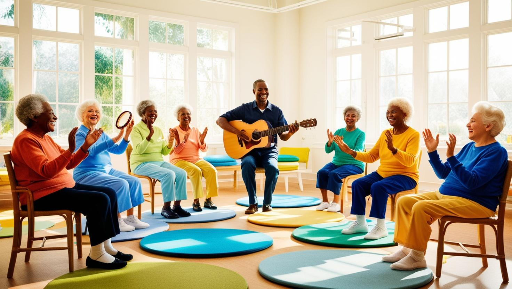

音樂律動區 (Music & Movement Zone - YouTube 播放)
正在載入 YouTube 音樂...

在「音樂律動區」，我們相信音樂是跨越語言與記憶的橋樑。這個充滿活力與歡笑的空間，旨在透過音樂欣賞、歌唱、簡易樂器演奏以及溫和的肢體律動，為長輩們帶來愉悅的身心體驗。
無論是熟悉的旋律還是全新的節奏，音樂都能有效地刺激感官、喚醒情感、促進社交，並為日常生活增添色彩與樂趣。
特色與效益
- 情緒調節與放鬆：優美的音樂有助於舒緩焦慮、平靜心緒，提升整體幸福感。
- 認知刺激：跟隨節奏、記憶歌詞、辨識樂器等活動能活化大腦功能。
- 促進社交互動：共同歌唱、合奏或參與團體律動能增進人際連結與歸屬感。
- 提升肢體協調：溫和的肢體律動能改善平衡感、柔軟度和關節活動度。
- 增強自我表達：透過歌聲或樂器，長輩可以非語言的方式表達情感。
空間佈置與氛圍
我們打造了一個安全、舒適且能激發參與熱情的音樂環境：
- **空間規劃：**寬敞明亮的開放式空間，鋪設防滑地板或舒適的活動軟墊，方便輪椅使用者參與。
- **器材設備：**備有音響系統、投影設備（播放歌詞或影片）、多種簡易打擊樂器（如手鼓、沙鈴、三角鐵）、以及適合長輩的麥克風。
- **氛圍營造：**牆面可採用溫暖明亮的色彩，並以音樂符號、樂器圖案或知名音樂家肖像點綴。充足的自然光線與良好通風。
- **座位安排：**提供舒適且具支撐性的座椅，可彈性調整排列方式，以適應不同活動需求。
在這裡舉辦的活動
- 懷舊金曲歡唱時光：定期播放長輩們熟悉的經典老歌，鼓勵大家一起哼唱。
- 簡易樂器合奏：在帶領者引導下，使用簡單樂器共同演奏出旋律。
- 音樂治療團體課程：由專業音樂治療師設計並帶領，針對特定需求進行介入。
- 主題音樂欣賞會：例如「台灣民謠之夜」、「古典音樂下午茶」等。
- 溫和肢體律動：配合音樂進行簡單的上肢伸展、坐姿舞蹈等活動。